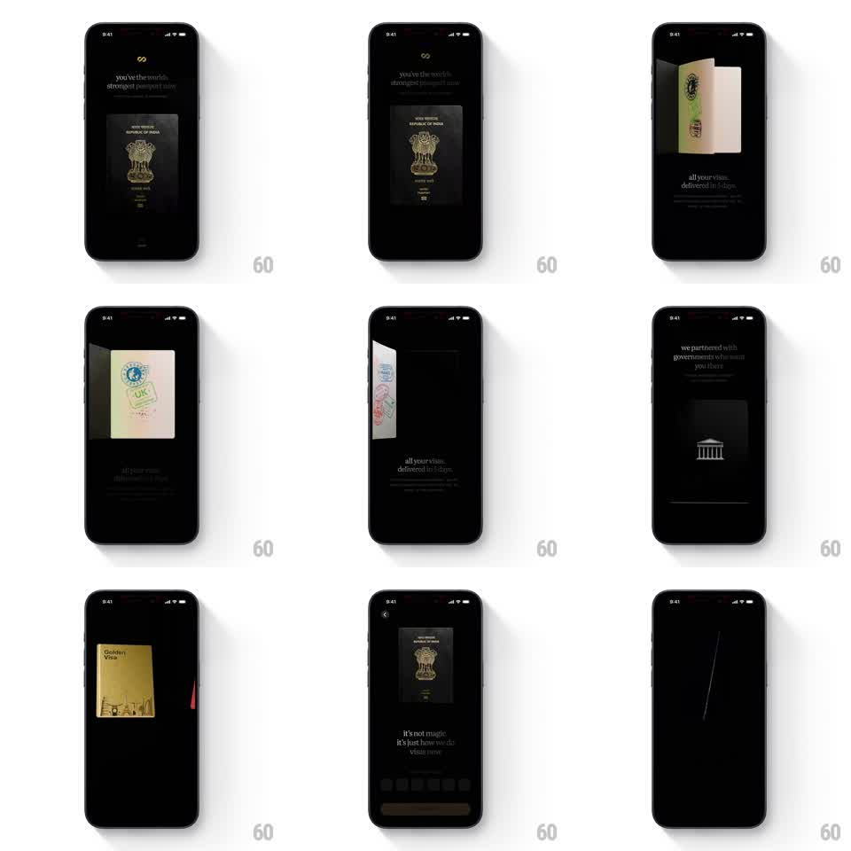

Media
Frame-by-frame

Rebuild this animation 1:1: Atlys' scroll-driven onboarding story - a 3D passport that page-flips through visa stamps as you scroll, moving through chapters: "you've the world's strongest passport now", "all your visas, delivered in 5 days", "we partnered with governments", ending on "it's not magic, it's just how we do visas now" with a CTA.

Rebuild this animation 1:1: Atlys' scroll-driven onboarding story - a 3D passport that page-flips through visa stamps as you scroll, moving through chapters: "you've the world's strongest passport now", "all your visas, delivered in 5 days", "we partnered with governments", ending on "it's not magic, it's just how we do visas now" with a CTA. ## Integration Integration: stack-agnostic spec - springs given as stiffness/damping, timed motions as duration + curve; map every value to your framework and animation library of choice. ## Scene Near-black screen with small centered serif copy per chapter. Hero object: a 3D passport (embossed cover, gold crest) that opens to cream inner pages stamped with colorful visa marks (UK, UAE-style circular stamps). Later chapters show a gold "Golden Visa" card and a minimal government-building glyph. Final page: copy above a row of page dots and a wide CTA button. ## Motion spec Pattern: scroll-scrubbed 3D page-flip story. - Scroll binding: story progress maps 1:1 to scroll; each chapter occupies roughly one viewport of scroll distance. - Page flip: the passport's right page rotates around the spine (-0 -> -180deg, scrubbed) with paper curl and a soft shadow sweeping the left page; each flip reveals the next stamped spread. - Passport entrance: cover rises from center and tilts from flat to a 15-20deg three-quarter view (600ms, ease-out) on chapter 1. - Chapter copy: fades/slides up (250ms) as its chapter becomes active, previous copy fades out. - Chapter transitions: the passport scales down and slides off as props swap (gold card scales in, spring ~280/18); the building glyph draws in with a 400ms stroke fade. - Finale: passport returns small above the copy, page dots fill sequentially, CTA fades in last (300ms). ## Calibration - The flip must be scrubbed by scroll position, not triggered - free-running flips remove the tactile feel. - Keep the background near-black throughout; the paper and stamps carry the color. ## Reduced motion Chapters cross-fade (250ms); the passport swaps between static spreads without the flip. ## Don't miss - Visa stamps look hand-stamped (slight rotation, ink texture), not printed flat. - Copy voice is lowercase and confident; keep the exact phrasing style.